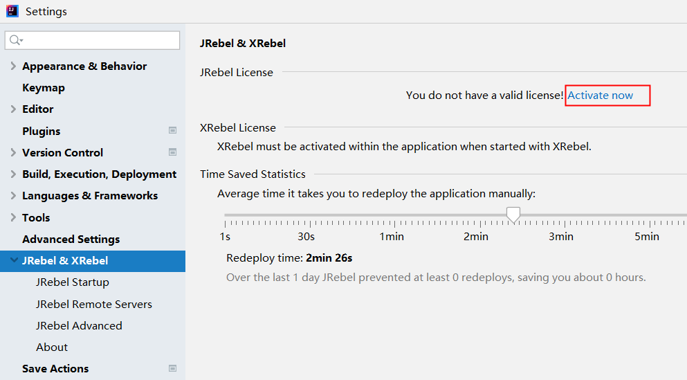
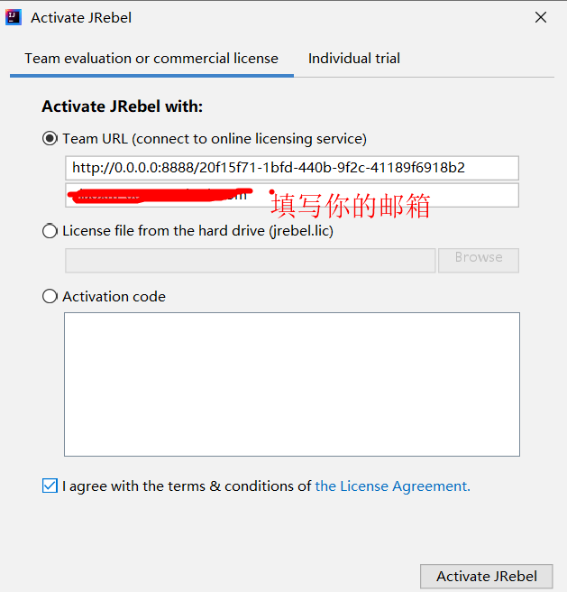
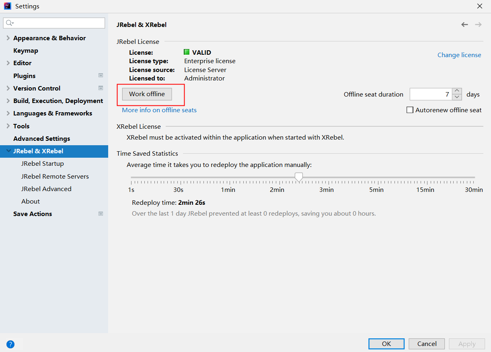

jrebel 一个idea的插件
说明
在idea上修改java代码之后，不需要重启，直接按 ctrl +shift + F9 即可生效，本地调试的时候，可以节约很多时间
安装idea插件
- JRebel and XRebel for IntelliJ
- JRebel mybatisPlus extension
激活
step1 下载和运行反向代理
下载地址：https://github.com/ilanyu/ReverseProxy/releases/latest
step2 生成GUID
step3 用这个网址 + 生成的 GUID 激活
例如: http://0.0.0.0:8888/738b776f-6cc9-4ac5-9574-960a057392db


step4:设置离线模式 来防止失效
